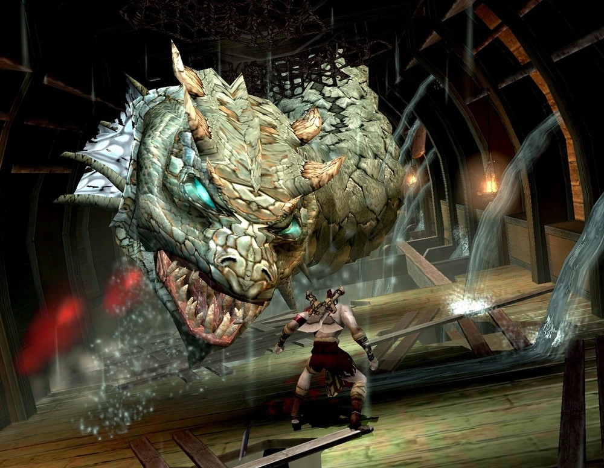
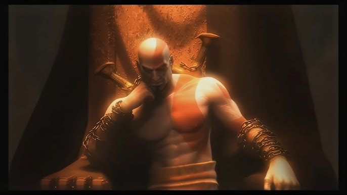
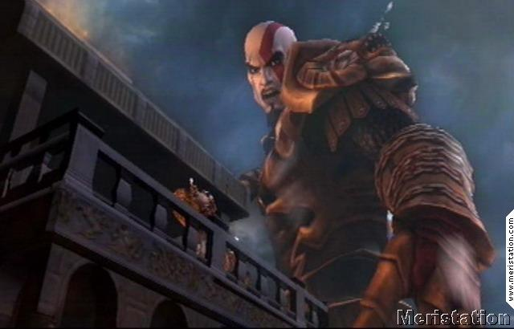
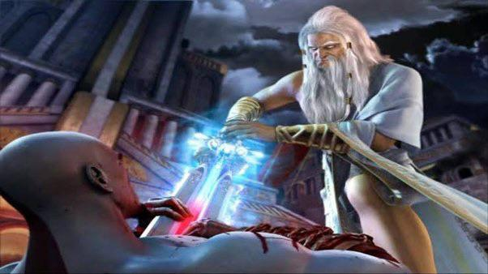
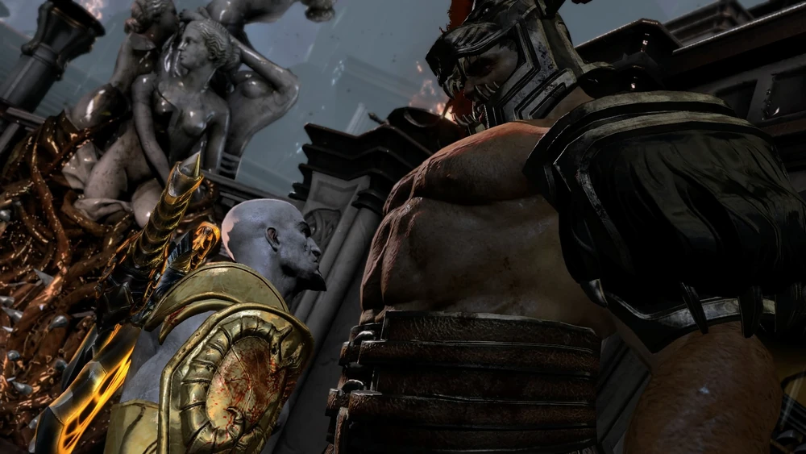
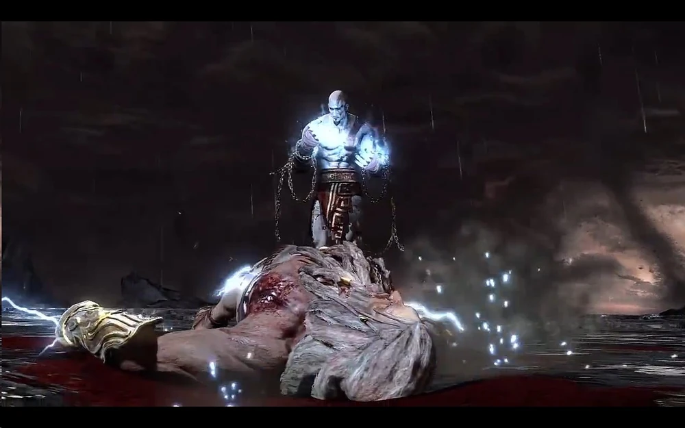

Cronología
GOD OF WAR
GOD OF WAR (INICIO)
Kratos se convierte en un sirviente de los dioses del Olimpo. Aunque ha perdido todo, sigue luchando porque los dioses le prometen una cosa: el perdón de sus pesadillas.
Su misión es clara: derrotar a Ares, quien ha perdido el control en Atenas y amenaza con destruir todo.
A lo largo de su viaje, Kratos se enfrenta a criaturas mitológicas, dioses menores y pruebas diseñadas para quebrarlo física y mentalmente.

GOD OF WAR (FINAL)
Finalmente, Kratos logra alcanzar a Ares en una batalla colosal.
descubre que puede derrotarlo usando la llamada “Caja de Pandora”, un artefacto que le otorga poder suficiente para igualar a un dios.
Tras una pelea brutal, Kratos mata a Ares.
Sin embargo, cuando cree que su sufrimiento ha terminado, los dioses le niegan el olvido que tanto desea.

GOD OF WAR II (INICIO)
Kratos ahora es el nuevo dios de la guerra.
Pero no es un dios como los demás. Es violento, impulsivo y sigue actuando como un guerrero espartano.
Zeus observa su comportamiento con preocupación. Temiendo que Kratos pueda volverse una amenaza, decide traicionarlo.
En una emboscada, Zeus lo mata y le quita sus poderes divinos.

GOD OF WAR II (FINAL)
Kratos es arrastrado al inframundo, pero se niega a aceptar su destino.
Con la ayuda de los Titanes, logra escapar de la muerte.
Su objetivo cambia: ya no busca redención… ahora busca venganza contra Zeus y todo el Olimpo.
Para lograrlo, viaja en el tiempo para cambiar su destino y evitar su muerte.

GOD OF WAR III (INICIO)
Kratos lidera una guerra total contra el Olimpo junto a los Titanes.
El mundo comienza a desmoronarse mientras los dioses caen uno por uno.
Cada batalla provoca desastres naturales que afectan todo el mundo conocido.

GOD OF WAR III (FINAL)
Kratos elimina a varios dioses importantes, incluyendo a Poseidón y Hades, provocando el colapso del mundo griego.
Finalmente enfrenta a Zeus en una batalla final devastadora.
Aunque lo derrota, comprende que su venganza solo ha generado destrucción sin sentido
En su último acto, Kratos decide sacrificarse para liberar el poder de la esperanza a la humanidad.
Este momento marca el final de la trilogía original y el cierre de su ciclo de venganza..

Descargar revista en PDF